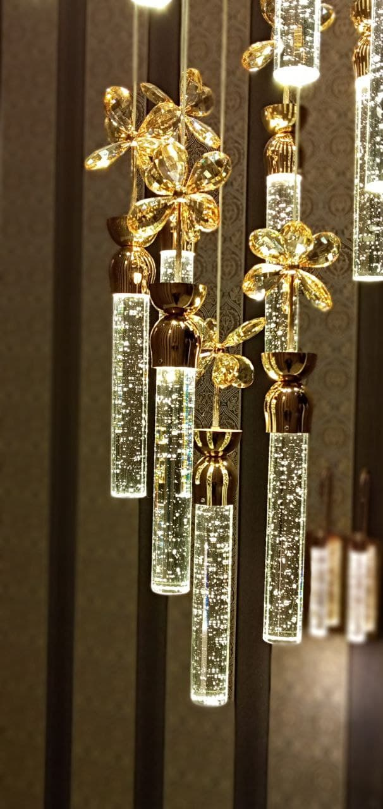
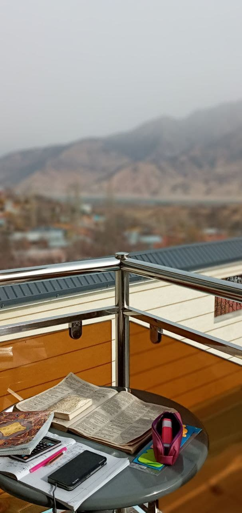
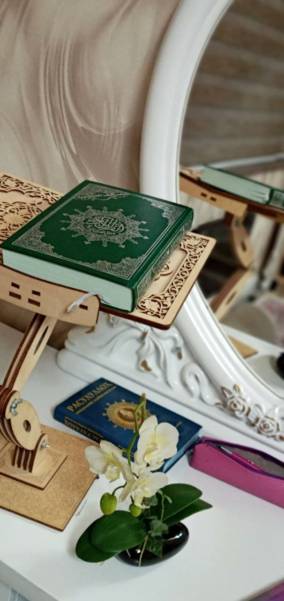

| # | Вопрос | Ответ |
|---|---|---|
| 1 | Ф.И.О | Гуломова Асмо Шарофиддин кизи |
| 2 | Дата рождения | 20 мая |
| 3 | Какое твоё любимое блюдо? | Котлеты, паста, фри |
| 4 | Любимый предмет? | Химия, литература, английский язык |
| 5 | Твоя мечта? | Хочу политеть на воздушном шаре, вместе с семьей, хочу купить завод "Ermak" курт и съесть все курты :), хочу найти укромное место (пищеру или типо того) и уединиться собой, поразмышлять о Господе и его творениях (Как делали Пророки или авлия) целый день; хочу отправиться с семьей жить в Турцию, там учиться; остальное уже - Цели |
| 6 | Телефон номера и адрес | Учтепа р-н 13 квартал; +9989 (99) 844-15-69 |
| 7 | 3 человека из нашего класса которые изменили твою жизнь? | Я думаю что мы никогда не встречаемься с людми в жизни просто так, это всё предопределено Allahом. Поэтому я должна с каждого человека брать что то хорошее или учиться на его/её ошибках. Нельзя сказать, что моя жизнь прямо изменилась, но у каждого ученика в классе, мне есть чему научиться. В частности: 1. У Эъзозы - смелости и открытости. Она всегда говорит, если несправедливо, как говорися, "гапи ичида колиб кетмиди" :). И я думаю, что иногда это правильно 2. У Умиды - скромности. Она может в шутку сказать, что она самая крутая, что Рузимат научился у неё матиматике, а Умид - физике :). Но она по природе такова, что никогда не поставит себя выше других 3. У Одины - честности. Она никогда не отрицает даже свои недостатки. Ведь первый шаг к исправлению своих минусов - это признать их |
| 8 | Знак зодиака? | Телец |
| 9 | Какой подарок ты бы хотела на свой д.р? | Целую корзину "Ermak" курт; книгу Nouman Ali Khana... любую, хоть на английском :). Книги нашего Шейха :). часы Al-Harameen |
| 10 | Какой стиль одежды ты предпочитаешь? | Спортивную одежду |
| 11 | Можешь ли держать себя в руках когда зла? | Не всегда, но я стараюсь сдерживаться |
| 12 | Какую суперсилу ты бы хотела? | Я бы хотела лечить все болезни, даже неуличимые, все болезни сердца и раны в сердце |
| 13 | Любимая песня/группа/певц(ца)? | Muhammad al-luhaidan |
| 14 | Перечисли вещи каторые делают тебя счастливой? | Когда родные люди счастливы, когда я достигаю своих целей, когда мечты сбываются, когда я узнаю что-то новоё, впрочем, все хорошее) |
| 15 | Преставь, что ты больше не увидешь одноклассников, что бы ты хотела им сказать? | Мне сложно представить... я бы сказала: "Вы самые лучшие одноклассники! Каждый из вас личность со своей изюминкой. Идите твёрдо к своей цели. Следите за своей верой! :)" |
| 16 | Вопрос каторый тебя интересует? | !!! |
| 17 | Черты характера, каторые тебе нравяться в людях? | Доброта, скромность, простота, искренность. Эти качества в наше время теряют свою ценность, но они ценятся мною |
| 18 | Что ты больше всего ненавидешь? | Высокомерие, игнор, морковь (не могу есть); когда смеются над другими людьми, делая им больно |
| 19 | Ваша фирменная реплика? | WORLD :) |
| 20 | Что ты никогда не простишь? | У меня ещё не была случаев, чтобы я не простила) |
| 21 | Что ты понимаешь под словом "любовь"? | Любовь к Allahу и нашему Пророку саллолоhу алейхи уа саллам - вот самая чистая и настоящая любовь |
| 22 | Чего вы боитесь? | Only Allah! |
| 23 | Вы не устали? | Нет |
| 24 | Что тебе нравится в себе? | Много чего |
| 25 | Любимое блюдо?(вымышленное) | Я сама придумываю (додумываю) рецепты и готовлю, но они часто не получаются :) |
| 26 | Какие качества ты предпочитаешь в человеке, с каторым ты хочешь пройти дальше жизненый путь? | С крепким Иманом, Илмом, добрым, скромным и простым, качествами, как у нашего Пророка (саллолоhу алейхи уа саллам) |
| 27 | Если бы сегодня был твой последний день, как бы ты его провела? | Я бы просила прощенья у Allahа; простила бы всех, отдала бы все долги; добилась бы довольства родителей (но мы не можем знать, когда придет наш конец. Поэтому каждый день прожить как последний) |
| 28 | Ты независимый человек? | Да, я зависю только от Всевышнего |
| 29 | Как ты успокаиваешься? | Лежу и думаю о своих ошибках |
| 30 | Каго ты считаешь своим наставником? Почему? Какая твоя мотивационная цытата? | Моим наставником является один прекрасный человек. Он умер еще перед моим рождением, но я могу с ним все еще общаться через его книги. Его слова являются пищей не только для разума, но и для души и сердца. Читая его книги, я поистине научилась любить Аллаха, понимать Его имена. В Коране говорится: "Достаточно нам Аллаха, Он - Прекрасный, Доверенный!" Я хочу, чтобы этот аят запечатался в моём сердце. Ведь, действительно, никто не сможет тебе помешать, если Аллах того пожелает. Но кто поможет тебе, если Аллах не пожелает? Аллах единственный, Кому можно довериться, Кто никогда меня не подводил, всегда был со мной. Это и является моей любимой цитатой. |